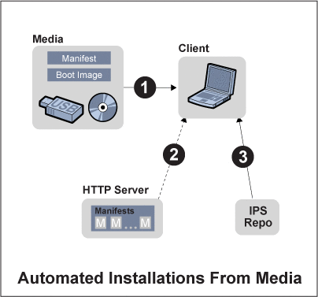

Document Information
1. What's New For Automated Installations
2. Introduction to the Automated Installer
3. Automated Network Install Task Map
4. Automated Installations That Boot From Media
Why Boot From AI Media?
System Requirements for Automated Installations Using Media
5. Set up an Automated Install Server
6. How to Administer an Automated Install Server
7. How to Administer a Custom Install Client
8. How to Administer Manifest Files
9. How to Manage Client Installations
10. Troubleshooting and FAQs for the Automated Installer
11. Appendix
|
How to Install Using Media
To do an automated installation by booting from AI media, you must
perform the following steps:
Check the system requirements for the client that you want to install. Download an AI image for either SPARC systems or x86 systems, and burn that image to a CD or other media. Create a custom manifest. You can either use the default manifest that is provided in the AI image, or you can set up a custom manifest and provide the location of this manifest when the client boots and installs.
Note - This step is optional for the OpenSolaris 2010.03 release. However, if you want to install an OpenSolaris developmental build either before or after the OpenSolaris 2010.03 release, this step is required. You must customize the manifest to point to the IPS repository that contains the OpenSolaris development builds. See Creating a Custom Manifest.
Insert the CD or other media in the client system, and boot the client system from the device containing the AI media. Use an x86 GRUB menu option or a SPARC command at the OBP prompt to invoke an automated installation with either the default manifest or a specified custom manifest.
For complete instructions, see the following sections.
Creating AI MediaBefore You BeginCheck the System Requirements for Automated Installations Using Media for the client that you want to install.
- Download either a SPARC AI image or x86 AI image from http://www.opensolaris.com/get/.
Note - The same AI images can be used to perform either installations that boot
from an install server or installations that boot from media.
Alternately, download an AI image from http://opensolaris.org/os/downloads/, selecting an image either for the
current release or for a particular OpenSolaris developer build.
Note - Make sure that the build number or release of the AI image
is the same build number or release for the OpenSolaris operating system that you
plan to install.
- Store the AI image on your local file system.
The AI image is an .iso image file. When you download the image,
you store the .iso image file on your system.
Note - You can, at this point, copy the default manifest from the .iso file,
and modify that copy to create a custom manifest, as described in
the next section.
- Burn the .iso file onto a CD or other media.
Note - The AI image is only about 250–350 MB.
Creating a Custom ManifestThe default manifest, default.xml, in the AI image is an XML file that
contains specifications for an x86 or SPARC installation. If you do not want
to use this default manifest, you can create a custom manifest and store
it on an HTTP server. When the client boots, you can specify
the location of this custom manifest file.
Note - Creating a custom manifest is optional for the OpenSolaris 2010.03 release. However, if
you want to install an OpenSolaris developmental build instead of the OpenSolaris 2010.03
release, a custom manifest is required. You must edit the custom manifest to
point to the IPS repository that contains the OpenSolaris development builds as described
in Step 1 below.
After you download a SPARC image or an x86 image, the manifest
file, named default.xml, is found in the following directory within the .iso file: /usr/share/auto-install/default.xml Alternately, you can see the complete file default.xml at Default Manifest File, default.xml.
Note - The manifest file contents are identical, by default, for both x86 installations and
SPARC installations.
- Review the default manifest file contents and decide whether you want to customize
the installation specifications in this file.
For example, you may decide to use a different IPS repository instead
of the opensolaris.org repository that is specified in the default manifest. Or, you may
decide to install a different set of packages, modifying the list of packages
in the manifest's <ai_install_packages> tag.
Note - The manifest specifies the default IPS repository, http://pkg.opensolaris.org/release/. You can change the
manifest to point to another repository of your choice. For example, if you
want to install an OpenSolaris development build instead of installing the OpenSolaris 2010.03 release,
the manifest needs to point to an IPS repository that contains the OpenSolaris
development builds. You can change the IPS repository listed in the manifest to
http://pkg.opensolaris.org/dev/, a repository that contains these developmental builds.
If you decide to change the installation specifications, you need to create a
custom manifest as follows.
- Copy the default file and save the copy on an HTTP server.
The default manifest file can be obtained from auto_install/default.xml in the .iso
image that you have downloaded. Or, you can copy by making a copy
the same file from Default Manifest File, default.xml. The following commands may be used to obtain the default manifest file from
the .iso file that you have downloaded. $ lofi_dev=$(pfexec /usr/sbin/lofiadm -a <path to .iso file>)
$ pfexec /usr/sbin/mount -o ro -F hsfs ${lofi_dev} /mnt
$ cp /mnt/auto_install/default.xml <path to your copy of AI default manifest>
Note - Then, use the following commands to clean up the lofiadm device and
mount point. % pfexec /usr/sbin/umount /mnt
% pfexec /usr/sbin/lofiadm -d ${lofi_dev}
You could save the copy, for example, at http://example.com/myfiles/mymanifest.xml. Note the filename and the location of the new file. You'll be
prompted to provide that information when the client boots.
- Modify the installation specifications in your custom manifest by manually editing the XML
tag contents.
When you review Default Manifest File, default.xml, you can see that the default manifest file that
you copied contains the <ai_criteria_manifest> section with the following subsections:
You can edit tags in the main <ai_criteria_manifest> section or in either
of the two subsections. For instructions about editing your custom manifest, see the following:
Installing a System By Booting From AI MediaOnce you have created your AI media and, optionally, created a custom manifest,
you are ready to install a client by booting from the AI
media. As shown in the following image, installing a client using AI media
involves 3 basic steps:
Insert the media and boot the client from the device containing the media. When the client boots, make an automated installation selection from the GRUB menu for x86 systems, or type a boot cdrom command for SPARC systems. The GRUB menu selection or boot command that you use specifies whether the installation will use the default manifest on the media or a custom manifest that you have stored on an HTTP server. The manifest contains the installation specifications. See instructions below for details. The packages to be installed are copied from an IPS repository on the network. The IPS repository location and package names are specified in the manifest.
 The following procedure provides detailed installation instructions.
- Insert the AI media in the client system.
The media includes a boot image and a default manifest for the installation.
- Boot the system, specifying an automated installation that uses either the default manifest
or a custom manifest.
Use either the x86 instructions or the SPARC instructions below for this step.
- For x86 clients, select either a custom manifest or default manifest option from
the GRUB menu.
GNU GRUB version 0.97 (639K lower / 2078660K upper memory)
OpenSolaris 2010.03 Automated Install custom
OpenSolaris 2010.03 Automated Install
OpenSolaris 2010.03 Automated Install custom ttya
OpenSolaris 2010.03 Automated Install custom ttyb
OpenSolaris 2010.03 Automated Install ttya
OpenSolaris 2010.03 Automated Install ttyb
Boot from Hard Disk
Use the arrow keys to select which entry is highlighted.
Press enter to boot the selected OS, 'e' to edit the
commands before booting, or 'c' for a command-line. The default GRUB menu entry, “OpenSolaris 2010.03 Automated Install custom,” prompts you for
the location of a custom manifest before proceeding with the automated installation.
You must select the second entry in the GRUB boot menu, “OpenSolaris 2010.03
Automated Install,” to initiate a “hands-free” automated installation. This selection uses the manifest
on the media.
Note - Note the following:
The installation options that state “custom” in the GRUB menu entry will use a custom manifest that you specify. In general, if install=true is specified in the kernel line for the GRUB entry that you use, the installation automatically begins. If you want to boot the x86 system without immediately starting an automated installation, check the GRUB menu entry that you're going to use. If install=true is specified in the kernel line for that GRUB entry, remove install=true. Then, the client will boot and a login screen will display, but the installation will not begin. The ttya and ttyb options in the GRUB menu send the screen output during the installation to serial console ttya (COM1) or ttyb (COM2).
- To use the default manifest for the automated installation, choose one of the following options from the GRUB menu:
OpenSolaris 2010.03 Automated Install
OpenSolaris 2010.03 Automated Install ttya
OpenSolaris 2010.03 Automated Install ttyb When you select one of these options, the automated installation begins.
- To specify a custom manifest for the automated installation, choose one of the following options from the GRUB menu:
OpenSolaris 2010.03 Automated Install custom
OpenSolaris 2010.03 Automated Install custom ttya
OpenSolaris 2010.03 Automated Install custom ttyb When you select one of these “custom” options, the following prompt displays: Enter the URL for the AI manifest [HTTP, default]:
- Type the path to a custom criteria manifest that you have previously set
up on an HTTP server.
For example, type http://example.com/myfiles/mymanifest.xml After you provide that information, the automated installation begins.
Note - If you choose the “Boot from Hard Disk” option in the x86 GRUB
menu, you will not start an automated installation. Instead, the client boots from
its hard disk.
- For SPARC clients, type a boot command at the OBP prompt, specifying either
a default or custom manifest as follows.
- To boot and install using a custom manifest, type the following command:
boot cdrom - install prompt The following prompt displays: Enter the URL for the AI manifest [HTTP, default]:
- Type the path to your custom manifest.
For example, type http://example.com/myfiles/mymanifest.xml The automated installation begins, using the specifications in the custom manifest.
- To boot and install using the default manifest, type the following command:
boot cdrom - install The automated installation begins, using the specifications in the default manifest.
Note - The following SPARC boot commands will not start an automated installation:
This command boots the client from its hard disk: boot disk The following command boots the client from the cdrom, a login screen is displayed, and the automated installation does not start boot cdrom
The automated installation begins. This is a “hands-off” installation. Packages that are needed
for the installation are automatically pulled from the IPS repository specified in the
manifest. When the automated installation is complete, the output states whether the installation
succeeded or failed.
- After the installation, you can review the installation log as follows.
If the installation failed, you can review the installation log at /tmp/install_log. If the installation was successful, you can find the log at either /tmp/install_log before you reboot the system, or at /var/sadm/system/logs/install_log after you reboot.
For troubleshooting information, see the following:
|